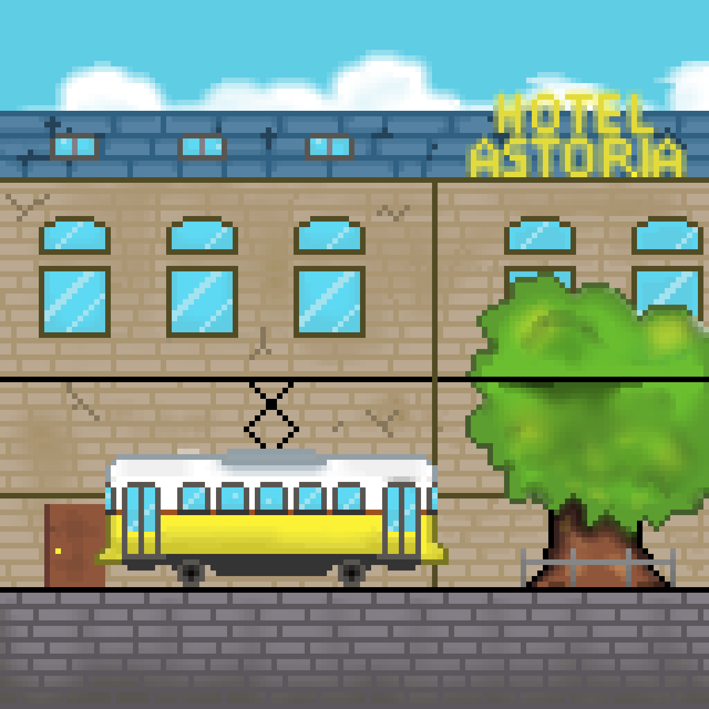
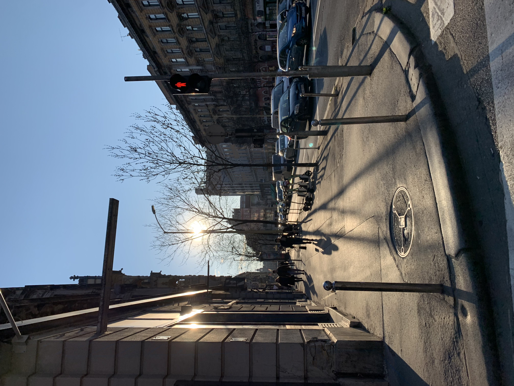
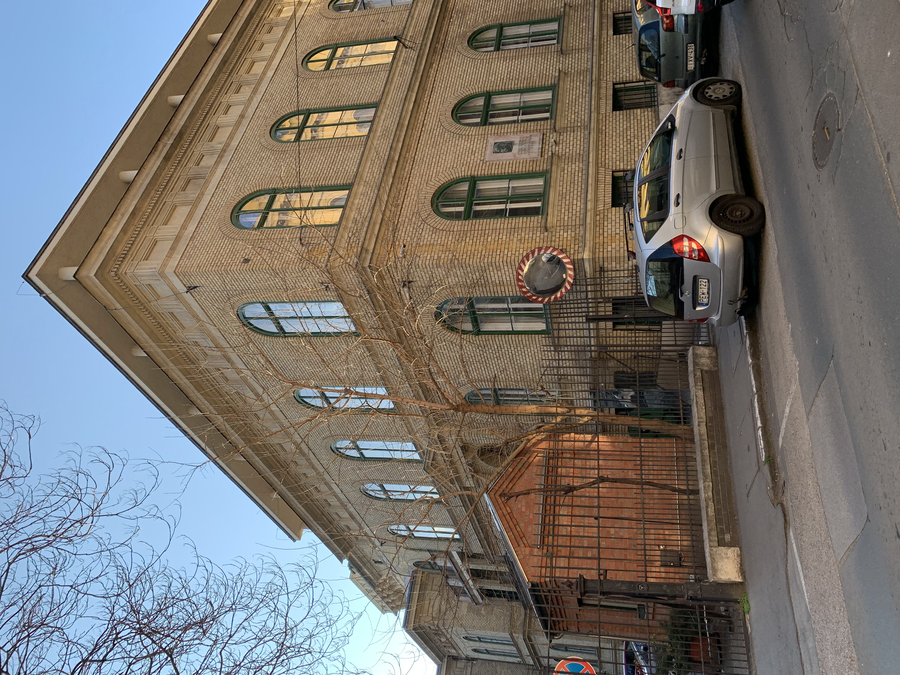
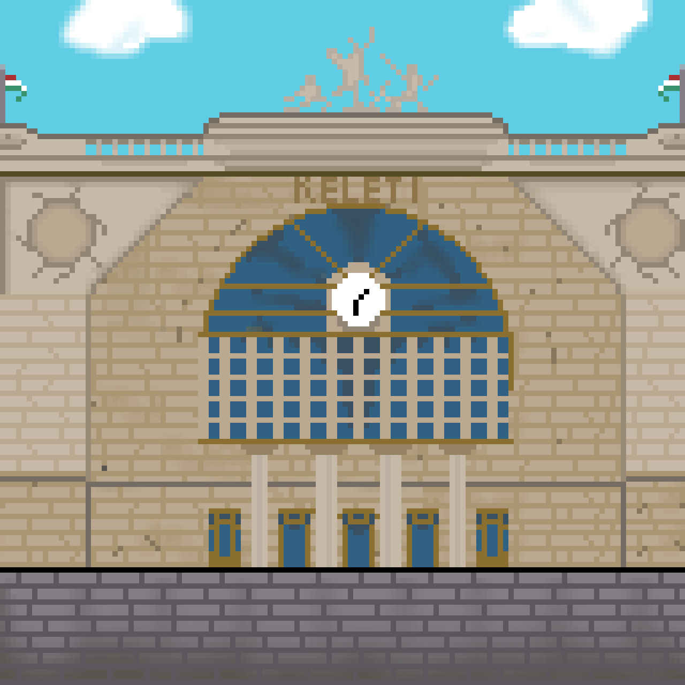
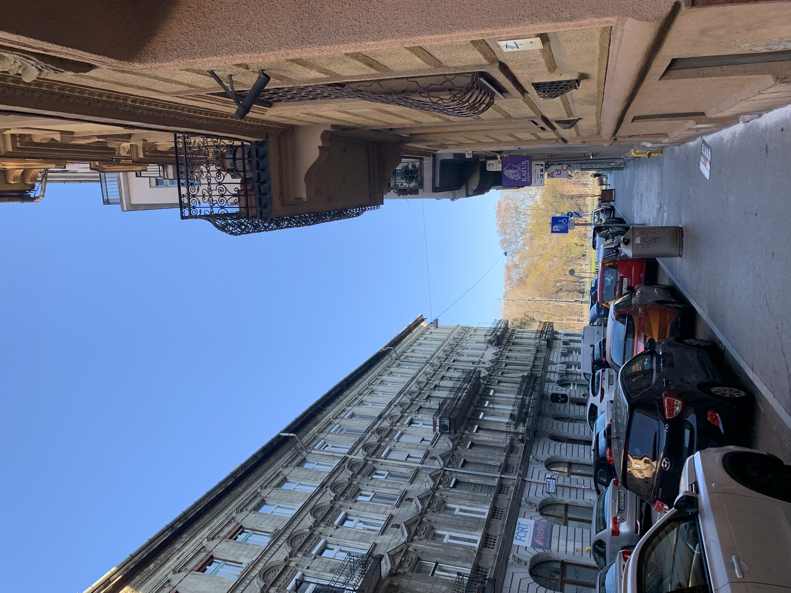

Deák tér reggel 8
Deák tér hajnal 4
Minálunk alszik még
Világos ég, sötét ég
Biorobot - Sosebánd

Astoria
A kereszteződést az itt található Astoria Hotel miatt kezdték el így hívni, és mára már levakarhatatlanul ráragadt a Kossuth Lajos utca, a Kiskörút és a Rákóczi út találkozására. Az Astoria Szálló Budapest legrégebbi eredeti formájában megmaradt szállodája. Az 1914-ben megnyílt hotel a legelegánsabb, drága, exkluzív szállodák közé tartozott. Jelenleg is Budapest egyik legpatinásabb szállodája, főleg külföldiek a vendégei. A környék fontos kultúrális központ: itt található az ELTE BTK régi épülete, a közelben a Magyar Nemzeti Múzeum, és a kiskörúton rengeteg antikvárium is elhelyezkedik.

Altair teaház
Amikor először jártam itt, 5 percig bolyongtam, mielőtt megtaláltam a leutat ebbe a különleges teaházba. A keresgélésem teljesen megérte: már az első pillanatban elvarázsolt a hely. Különlegessége, hogy a vendégeknek le kell venni a cipőjüket, fogyasztani egy szőnyegekkel és párnákkal kibélelt, többszintes helyen lehet. A választék széleskörű, az árak belvárosi helyhez illőek voltak. 10/10-es élmény, mindenképp ajánlom.
Humana
A Humana használtruhabolt tipikusan egy olyan üzlet, ahol szinte csak külföldi vásárlókkal találkozik az ember. A kínálat igyekszik a retró, vintage-ebb stílust hozni, az itt vásárolt ruháim feléből ki kellett vágnom a válltömést. Az áraik új áru érkezésekor bolti szinten mozognak, de a hely különlegessége, hogy árufeltöltés előtt 2 héttel egyre alacsonyabbak lesznek. A kedvenc napom az 1250 ft-oss és a 800-as napok, amikor még sok jó állapotú ruha van és kedvezményesen be lehet vásárolni.
Subway
Gyerekkoromban hétköznapinak tűnt, ha elsétáltunk egy Subway szendvicsező mellett, mára már azonban megfogyatkoztak az üzletek Magyarországon. Először Angliában rendeltem magamnak Subway szendvicset, és azóta imádom az olasz fűszeres kenyeret. Szerencsére az Astorián lévő étterem még nem zárt be, így tudom, hogy itt biztosan jól lakhatok, ha errefelé visz utam.

Egyetemek
A környéken sok régi építésű egyetemi épület található, mint például a Pázmány jogi kara vagy az ELTE BTK. Az eldugott sétálóutcákban naplementekor a leghangulatosabb a kalandozás, ilyenkor teljesen más megvilágítást kap az egész környék. Az egyetemi életet éltetve rengeteg pub, bár és kávézó található errefelé, a Kálvin téren álló Szabó Ervin könyvtár pedig remek lehetőséget nyújt a világ elől elvonulásra és tanulásra.
Sok antikvárium
A kiskörúton sétálva az Erzsébet híd felé biztos sokaknak feltűnik a rengeteg régi könyvesbolt. Ezek az antikváriumok szinte méterekre találhatóak egymástól, és igazi időutazás egybe is betérni. Az antik könyv illat garantált, néhánynak egészen nagy kínálata van. Hosszas bolyongás után már feltűnnek az érdekesebb kategóriák is, például tudom ajánlani a Központi Antikváriumot, ha valaki várépítéssel kapcsolatban keres olvasnivalót. A boltok a nézelődésen kívül remek lehetőséget nyújtanak egy kis plusz idő elütésére, vagy hangulatos képek készítésére.

Blaha - Keleti - Csikágó
Sokan nem tudják, de a Keleti környékét történetesen Csikágónak is lehet hívni (igen, így magyarosan leírva). Ezzel kapcsolatban a szeretlek magyarország még egy cikket is publikált. A pályaudvar véleményem szerint a legszebb a budapestiek közül, nem véletlenül adott helyszínt több nagyszabású film forgatásának is. A távozó és érkező vonatokon kívül sok mást is tartogat a 8. kerületi csomópont.
Az éjszaka megindításához megannyi bár ad segítséget az Erzsébet körúton a Blaha és az Oktogon között. A bulisabbak számára kedvező a Place, a Matt letisztult belsejével csalogatja a fiatalokat, számomra mégis a Shot viszi a pálmát, amelyből forgalmasabb napokon 2 is nyitva van. Kicsit bentebb haladva a felújított Blahától több vizipipa bárt találhatunk, ide tartozik például a 1001, de szórakozóhelyekből sem szenved hiányt a környék (a közeli Instant-fogasba ráadásul ingyenes a belépés). Ha pezsgésre vágysz, itt a helyed!
Keleti aluljáró
A metróaluljárókban mindig is úgy éreztem, mintha egy másik világba csöppennék. A keleti metróaluljárója nem olyan mint a többi - egy kész labirintus. Megtalálni a kiutat egészen sok idő is lehet, de kárpótol a sok üzlet és bódé, ami a föld alatt található. Szinte olyan, mint az aluljárók plázája.
Poket automata
Talán már hallottak páran a nemrég indult POKET zsebkönyvek kezdeményezésről, amely világhírű irók műveit sűríti össze egy zsebméretű könyvbe. A POKET-nek rengeteg automatája van Budapesten elszórva, valamint mostanában már vidéken is népszerűsítik az olvasást. A könyvautomaták főleg nagyobb csomópontokon, metróaluljárókban vannak elhelyezve, így nyilvánvaló, hogy a keletinél is elhelyeztek egyet. Bármikor, amikor arra járok, lecsekkolom a kínálatot, melyik könyv illene a legjobban a gyűjteményembe.

Princess pékség
Klisének tűnhet, hiszen köztudottan jó hírnevű a Princess Pékség, mégis nekem az egyik kedvencemmé nőtte ki magát az üzletlánc. Amikor a belvárosban utazgatom, sokszor megjön a kedvem bedobni pár pestolinit, vagy egy pisztáciás croissant-t. Finomabbá teszik az utazást.
Népszínház utca
A Blaha Lujza térről közvetlenül nyílik a híres Népszínház utca, amely az évek alatt egyre inkább kezd veszélytelenebbé válni. Az utca különlegessége, hogy amint belépünk a házak közé, hirtelen minden nemzetbe találjuk magunkat - egyszerre. Az utca hangulatát legjobban a 24.hu cikke foglalja össze, amit itt lehet elolvasni: 24.hu